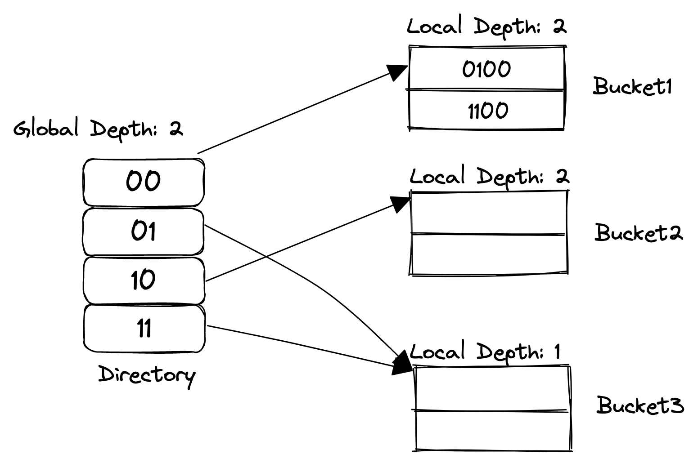
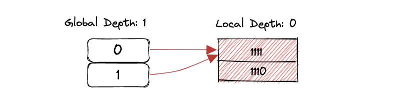
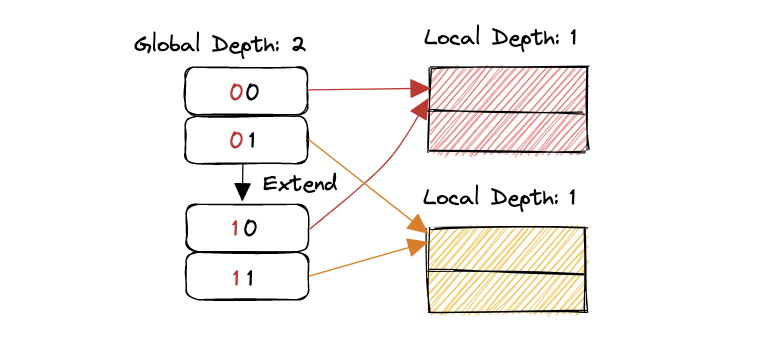
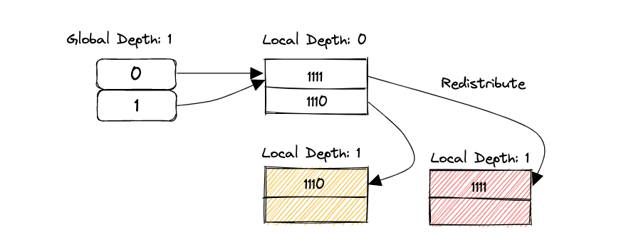
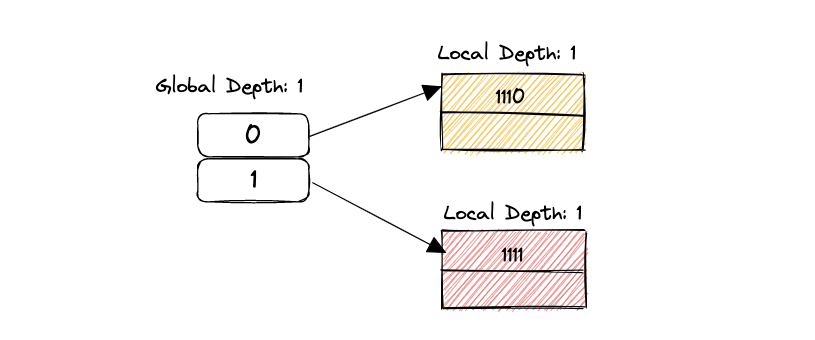
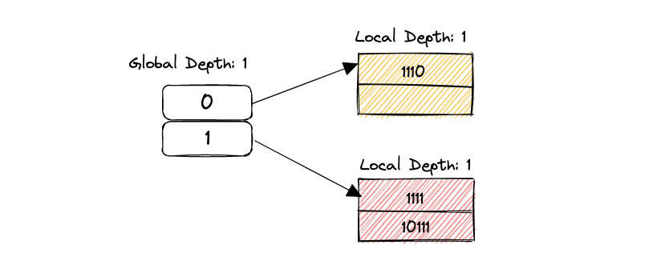
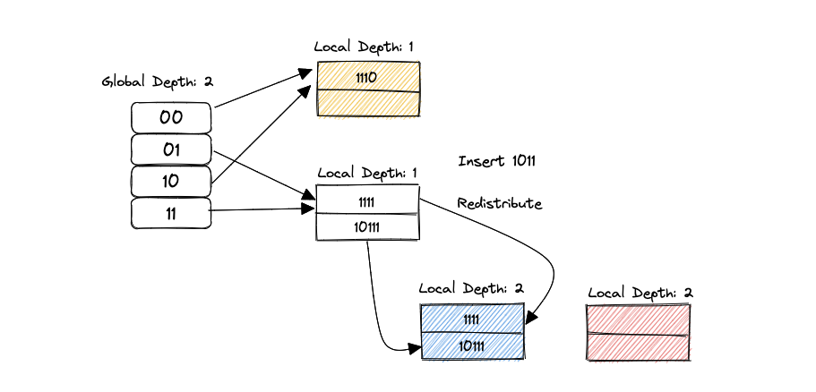
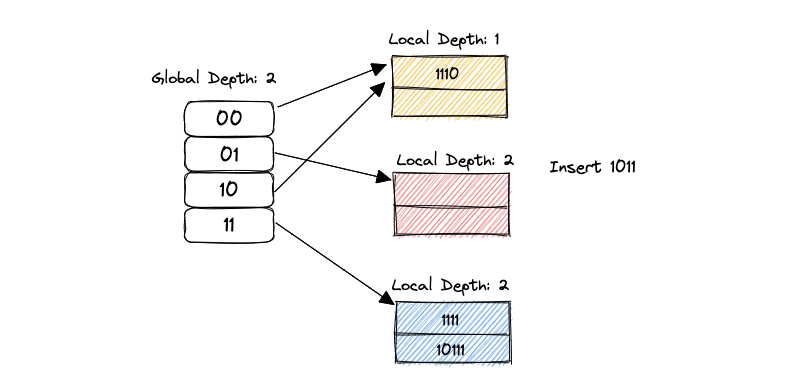
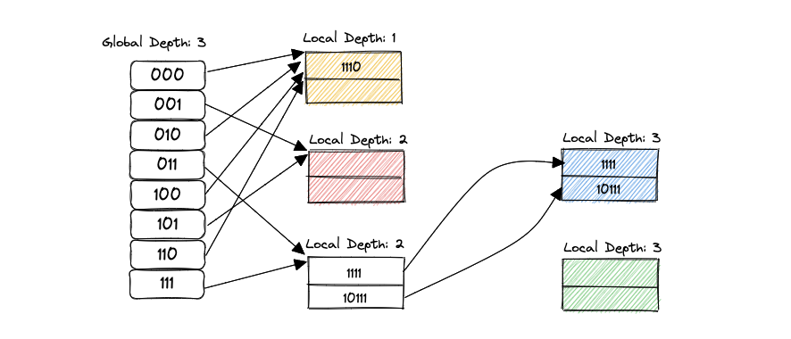
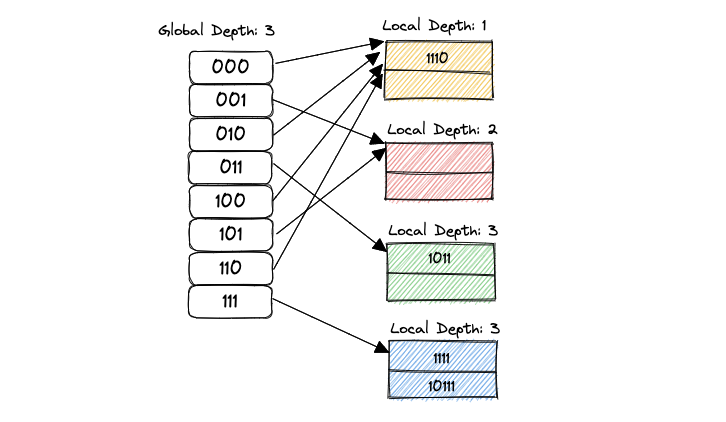

CMU 15-445 Extendible Hash Table
最近在学习CMU的15-445 DB课程，在做Project1的Extendible Hash Table的时候，由于是先看了课程，过了一个多星期才做的Lab，对extendible hash table只能说是知道大体的意思，并没有透彻的了解它，尤其是bucket指针和数据重分配这一部分，涉及到比较tricky的位运算，在一知半解的情况下实现它，完全没办法找到对应的bug，ConcurrentInsertFindTest和GetNumBucketsTest总是fail。又去参考了很多对可扩展哈希的文章，才发现自己一些细节是错误的。本篇文章尝试以我的理解说清楚extendible hash table，并作为我的菜坑记录。
Task
这一部分的任务就是搭建一个通用的存储unique
KV对的哈希表。我们需要实现哈希表的插入、删除以及查找操作。实验手册中并没有要求我们实现shrink部分，所以只需要关注如何扩展哈希表即可。代码在scr/include/container/hash/extendible_hash_table.h以及
extendible_hash_table.cpp下，实现之前建议先阅读这两个文件的代码和注释，明确我们的目标。
Overview of Extendible Hash Table
在理解可扩展哈希表之前，我们需要了解几个概念。
- Directory：是存放bucket指针的容器，可动态生长（以原大小的倍数作为增长率），容器的每个元素可用哈希值来索引。
- Bucket：桶。存放Key/value pair的桶，数据结构层面是一个线性表。
下面是一个简单的可扩展哈希表的示意图，具体不用关心它是怎么来的，先对它建立一个直观的印象即可。

上图又出现两个概念：
- Global Depth：假设global
depth为n，那么当前的directory必定有\(2^n\)个entry。例如，当前\(n=2\)，那么就有4个entry，\(n=3\)就有8个entry。同时，给定一个key，需要用global
depth取出这个key的低n位的二进制值。例如，一个key的二进制是10111，如果global
depth是3，通过
IndexOf(key)函数，得到返回值的二进制值是111，即为7。这个值用来索引directory[111]位置的bucket。 - Local Depth：local depth指的是（假设local depth为n），在当前的bucket之下，每个元素的key的低n位都是相同的。
两者之间有什么关系呢？
- 对于一个bucket来说，如果当前的global depth等于local depth，那说明这个bucket只有一个指针指向它。
- 如果当前的global depth大于local depth，必定不止一个指针指向它。
- 计算当前bucket有几个指针指向它的公示是\(2^{globalDepth-localDepth}\)。
Global depth和local depth的概念就是这些，然而在实现算法的过程中还有对这些概念的应用，我们暂且先忽略，之后的部分会一一阐述。
Implementation Scheme
对于Bucket的Insert，Remove以及Find操作，熟悉一下C++的list容器相关操作就可以实现。不过有一个地方需要注意的是，实现bucket的Insert方法时，注释里说的是先检查key是否存在，如果存在就要更新value。这里如果先判断bucket是否满了，就会出现bug。因为如果一个bucket满了，但刚你要插入的key在这个bucket的中，先判断是否满的话就会直接返回，不会更新对应key的value，就会造成之后find的错误。
实现了Bucket的三个操作之后，就可以实现ExtendibleHashTable的三大操作了。为了确保线程安全，每一个操作应当加锁来保证。
这里阐述一下Insert的算法流程，然后结合一个具体的例子，分析算法可能遇到的情况。
- 尝试插入Key，若插入成功，返回即可，若不成功，执行步骤2。
- 判断当前
IndexOf(key)指向的bucket下，该bucket是否满了。如果满了，执行步骤3。否则执行步骤7。 - 如果当前global depth等于local depth，说明bucket已满，需要增长direcotry的大小。增加directory的global depth，并将新增加的entry链接到对应的bucket。否则，继续执行步骤4。
- 记录当前的local mask，创建bucket1和bucket2，增加两个bucket的local depth，增加num bucket的数量。取出之前满了的bucket中的元素，按照local mask的标准将每个元素重新分配到bucket1和bucket2中。执行步骤5。
- 对每个链接到产生overflow的bucket的direcotry entry，按照local mask的标准，重新分配指针指向。执行步骤6。
- 重新计算
IndexOf(key)，执行步骤2。 - 插入指定的key/value pair。
Example
这个例子来自于官方的Homework #2 - Question 3。假定每一个bucket的容量大小为2，且哈希函数用最低的g个二进制位，g指global depth。
按顺序插入15，14，23，11，9。这几个数对应的二进制分别是，1111，1110，10111，1011，1001。
STEP 1：首先插入15和14，第一步没什么问题。
STEP 2：接着插入23，23的二进制是10111，当前的global
depth是0，计算得到的IndexOf(key)是0，说明23要插入到directory的第0个entry中，但是这个entry所指向的bucket满了。我们执行步骤3（重复一下步骤3：如果当前global
depth等于local
depth，说明bucket已满，需要增长direcotry的大小。增加directory的global
depth，并将新增加的entry链接到对应的bucket。否则，继续执行步骤4）。

这一步有一个很重要的点，新增长的entry怎么分配到对应的bucket？如果和上图的情况一样，从1增长到2，只需要把多出来的一个拉到唯一的bucket上就可以了，但如果从2到4，从4到8呢？多出来的若干个如何处理？其实只需要将多出来的一部分指针完全复制之前的一份就可以了。这样做法我觉得是可扩展哈希的比较重要的细节，由于可扩展哈希扩展direcotry时是按照当前大小的两倍进行扩展，新增长出来的部分作为之前directory的对等实体，每一个新的entry都对应了之前对应的entry，指向相同的bucket。唯一的不同就是之前的direcotry的索引最高位是0，扩展出来的最高位是1。

STEP 3：执行步骤4（记录当前的local mask，创建bucket1和bucket2，增加两个bucket的local depth，增加num bucket的数量。取出之前满了的bucket中的元素，按照local mask的标准将每个元素重新分配到bucket1和bucket2中。执行步骤5）。
当前local
mask的计算方法是1 << local_depth，其中的local
depth是指STEP 2图片中，扩展之前的local
depth，即为0。
为什么呢？因为在扩展之前，产生overflow的bucket中的数据，低local depth个的二进制位完全相同，在STEP 2的图片例子中，1111和1110没有相同的低位二进制位，因此local depth是0。现在要插入23（0b10111），由于bucket已经满了，所以我们需要分裂bucket、重分配KV pair、重分配entry的指向。分裂了bucket，就产生两个bucket。
怎么放KV
pair呢？我们总不能乱放吧？我们肯定要有规律的去分配。1111和1110，由于之前local
depth为0，表明不需要参考任何二进制位，因此可以放到一个bucket里。当插入10111时，一个bucket放不下了，就需要两个bucket，为了可以高效的查询，当然是归类分配才行。按什么归类？当我们给事物归类的时候，我们会按属性归类，玩具为一类，家具为一类。二进制怎么归类呢？我们可以从最低位二进制位开始对比，之前不需要对比，现在我们至少需要对比一个二进制位，才能将3个二进制数分为两类（2个+1个，如果对比一个二进制位还不行，就继续增加local
depth）。local mask的意思就是，之前local
depth为0，不需要对比，但我现在要对比第一位，那么我就可以使用1 << local_depth，1左移0位还是1，就是对比第一位二进制位。通过对比，1111和1110就不再是一类了，可以分别放入不同的bucket。

STEP 4：执行步骤5（对每个链接到产生overflow的bucket的direcotry entry，按照local mask的标准，重新分配指针指向。执行步骤6）。

STEP
5：执行步骤6，重新计算IndexOf(key)，由于改变了global
depth，新计算的IndexOf(key)是1，最后执行步骤2，判断1指向的bucket没满，执行步骤7，插入23。

STEP
6：接下来我们插入11（0b1011）。NOTE：这个例子在实现的过程中容易忽略掉。首先计算IndexOf(key)，得到结果为1，我们就要插入红色的bucket。但红色bucket满了，同时，global
depth等于local depth，因此需要扩展directory，执行步骤3。

之前的local depth我们比较最低位的二进制位，将1111和10111放入了一个bucket，由于该bucket产生了overflow，又分裂为两个bucket，我们就需要对这个产生overflow的bucket中的元素重新归类。正常情况下，产生overflow的bucket的中的元素可以被平均的分布到两个bucket中，但这个例子中，我们对比两个数的第二位，发现1111和10111最低的第二位仍然是1，那么还是将两者化为一类。并更新与overflow的bucket相关的directory entry的指向。

复杂的问题又来了，之前01和11的entry都指向一个bucket，在分裂的时候，我们怎么去redirect呢？答案是利用local
depth和local mask。分裂之前的local
depth为1（0b01），意味着指向这个bucket的最低一位二进制位都相同。01和11两个数的最低一位二进制位都是1。我们要分裂bucket，一定是bucket已经满了，也说明当前比较二进制位最低一位在将来不适用了，因为连上要插入的数，三个数的最低一位二进制位都是1，因此我们才需要local
mask，将1（0b01）左移local
depth位，变为2（0b10），意味着我们需要考量第二位二进制位才能区分三个数（这里的entry、global
depth还有local
depth之间的关系比较难理解）。想要redirect指向同一个bucket的所有entry，我们必须遍历一次directory。但并不是暴力遍历，通过观察可以发现，01和11刚好相差一个local
mask，而且01作为遍历的开始，可以通过hash(key) & (local_mask - 1)计算得到。
为什么是hash(key) & (local_mask - 1)呢？首先hash(key)可以理解为得到了key的二进制数，local
mask是由local depth得到的，local
depth表明的是存放在当前bucket中所有key的低位二进制位相等的个数。local
mask是下一个需要检查的二进制位的位置。同时我们也知道，既然key能插入这个bucket，那么说明key和存放于这个bucket中的keys是有共同性的，这个共同性就是：低local
depth位二进制数完全相同。local_mask -
1和key的二进制&的结果就是在directory中，最开始的那个entry，因为这个entry的值完全等于hash(key) & (local_mask - 1)。其余所有指向这个bucket的entry，唯一与这个最开始的不同就是：local
depth + 1位是0和1的区别。就是相差local mask。
啊，好复杂，感觉没有说清楚，后续可能更新一下，如果没懂可以私信我或者评论区讨论一下。
更新IndexOf(key)，由于global
index变为2，这时的index就是0b11，即第四个directory。进入步骤2。
STEP 7：判断是否能插入蓝色bucket，很明显，bucket又满了，且global depth等于local depth。进行扩展哈希表和分裂bucket。然后分配每一个KV pair。

最后更新IndexOf(key)，结果是0b011，插入绿色的bucket。

之后的继续添加和扩展大同小异，重点还是理解entry index、global depth和local depth的深层含义，还有相关位运算的思想。
踩坑记录
- 第一次实现的时候并没有考虑扩展后的指针指向问题，导致程序运行时访问到了nullptr的地址，报错。实际上directory的扩展本质上就是将原来的direcotry完完整整拷贝一份，不同的只是index不同。
- Grade scope做测试的时候，无论如何怎么调试都过不了ConcurrentInsertFindTest和GetNumBucketsTest，尝试着根据在线测试的输出在本地写了若干个对应的测试样例。还是没办法通过。最后阅读别人的文章才发现代码中分配元素的条件和重分配entry指针指向的条件有错误，根本原因还是没理解透彻extendible hash table中的index、global depth和local depth的内涵。以后一定要理解全部的算法内容再考虑代码实现，尤其是细节部分，de这样的bug简直是痛苦。
- 在算法的概述中，有涉及到循环插入的过程。在上面的例子中就是插入1011时的情况。判断一个bucket满了，分裂bucket后，将产生overflow的bucket中的元素根据local depth重新分配，结果全部都分配到一个bucket中。这时候如果还是尝试插入1011，是失败的。因此需要通过while迭代，也就是test case中的multi split test。第一次实现的时候并没有考虑到这个问题。
遵守课程的条例，不公开源码，但我把自己写的相关测试样例放在下面，写的比较粗糙，因为是debug太痛苦时写的。
TEST(ExtendibleHashTableTest, InsertMultipleSplitTest) {
auto table = std::make_unique<ExtendibleHashTable<int, std::string>>(2);
table->Insert(15, "a");
table->Insert(14, "b");
table->Insert(23, "c");
table->Insert(11, "d");
table->Insert(9, "e");
EXPECT_EQ(4, table->GetNumBuckets());
EXPECT_EQ(1, table->GetLocalDepth(0));
EXPECT_EQ(2, table->GetLocalDepth(1));
EXPECT_EQ(3, table->GetLocalDepth(3));
EXPECT_EQ(3, table->GetLocalDepth(7));
}
TEST(ExtendibleHashTableTest, ConcurrentInsertFindTest) {
const int num_runs = 50;
const int num_threads = 3;
// Run concurrent test multiple times to guarantee correctness.
for (int run = 0; run < num_runs; run++) {
auto table = std::make_unique<ExtendibleHashTable<int, int>>(2);
std::vector<std::thread> threads;
threads.reserve(num_threads);
for (int tid = 0; tid < num_threads; tid++) {
threads.emplace_back([tid, &table]() {
int val;
table->Insert(tid, tid);
EXPECT_TRUE(table->Find(tid, val));
});
}
for (int i = 0; i < num_threads; i++) {
threads[i].join();
}
EXPECT_EQ(table->GetGlobalDepth(), 1);
for (int i = 0; i < num_threads; i++) {
int val;
EXPECT_TRUE(table->Find(i, val));
EXPECT_EQ(i, val);
}
}
}
TEST(ExtendibleHashTableTest, ConcurrentInsertFind2Test) {
const int num_runs = 30;
const int num_threads = 5;
// Run concurrent test multiple times to guarantee correctness.
for (int run = 0; run < num_runs; run++) {
auto table = std::make_unique<ExtendibleHashTable<int, int>>(2);
std::vector<std::thread> threadsInsert;
std::vector<std::thread> threadsFind;
threadsInsert.reserve(num_threads);
threadsFind.reserve(num_threads);
for (int tid = 0; tid < num_threads; tid++) {
threadsInsert.emplace_back([tid, &table]() {
for (int i = tid * 10; i < (tid + 1) * 10; i++) {
table->Insert(i, i);
}
});
}
for (int i = 0; i < num_threads; i++) {
threadsInsert[i].join();
}
for (int tid = 0; tid < num_threads; tid++) {
threadsFind.emplace_back([tid, &table]() {
for (int i = tid * 10; i < (tid + 1) * 10; i++) {
int val;
EXPECT_TRUE(table->Find(i, val));
}
});
}
for (int i = 0; i < num_threads; i++) {
threadsFind[i].join();
}
}
}
TEST(ExtendibleHashTableTest, GetNumBucketsTest) {
auto table = std::make_unique<ExtendibleHashTable<int, std::string>>(2);
table->Insert(4, "a");
table->Insert(12, "b");
table->Insert(16, "c");
EXPECT_EQ(4, table->GetNumBuckets());
table->Insert(64, "d");
table->Insert(31, "e");
table->Insert(10, "f");
table->Insert(51, "g");
EXPECT_EQ(4, table->GetNumBuckets());
table->Insert(15, "h");
table->Insert(18, "i");
table->Insert(20, "j");
EXPECT_EQ(7, table->GetNumBuckets());
table->Insert(7, "k");
table->Insert(23, "l");
EXPECT_EQ(8, table->GetNumBuckets());
}